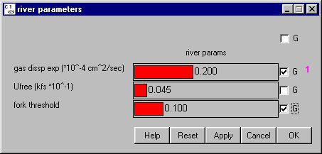

Editing multiple slider values simultaneously uses the "group" concept. For the majority of Slider Input windows, there is only one column of check boxes on the right side of the slider labeled G. There are several Slider Input windows in COMPASS which involve setting time-specific, dam-specific or reach-specific, and species-specific values. These Slider Input windows have check box columns labeled T (time), D (dam), R (reach), and S (species). For Slider Input windows containing sliders for mean, low and high values, sliders are grouped for mean, low or high values separately.
All changes made to slider values need to be applied by clicking Apply / Apply All / OK before the values will take effect.

Multiple sliders grouped